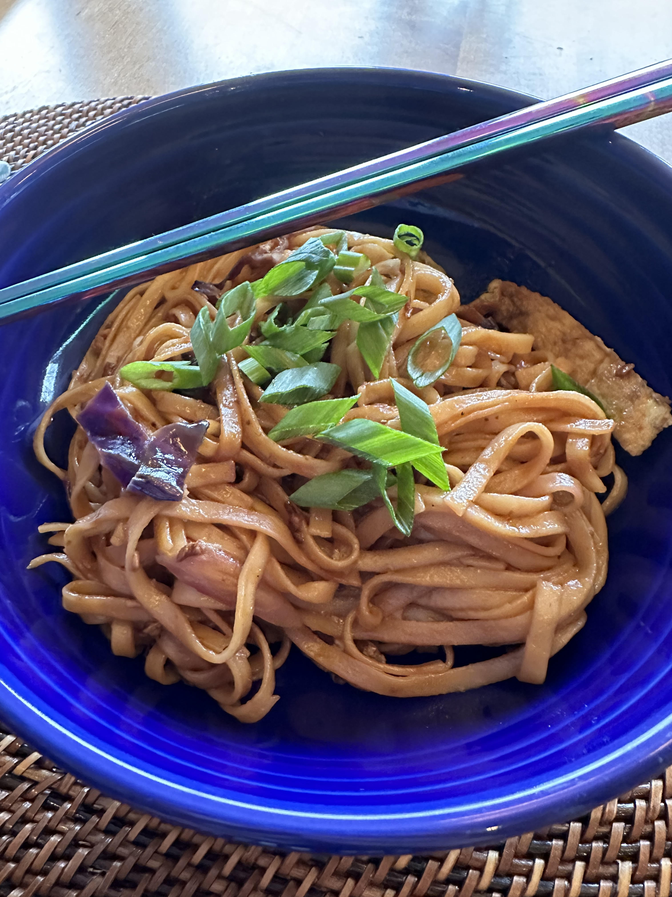

Mie Goreng
Servings: 4 Time: 45 minutes

Ingredients:
- 2 eggs
- 2 tbsp canola or vegetable oil
- 2 packets lo mein noodles
- 1 package garlic (about 10-12 cloves)
- 2 green onions
- 2 cups red cabbage, chopped
- 6 tbsp soy sauce
- 1 tbsp sugar
- 1 tsp sambal oelek
- 2 tsp ketchup
- 1 tsp sesame oil
- 2 tsp fish sauce
Preparation:
- Whisk eggs together with a fork or chopsticks. Heat 1 tbsp of vegetable oil in a skillet over medium heat,
and pour the eggs into it. Once both sides are cooked, remove the eggs and cut into ribbons.
- Heat the other tbsp of vegetable oil over high heat in a wok. Chop garlic and white parts of green
onions and add to the wok. Once garlic is caramelized, add cabbage to wok and toss together.
- Mix soy sauce, sugar, sambal, ketchup, sesame oil, and fish sauce together in a bowl.
- Add cooked noodles to the wok and toss together with sauce.
- Mix in egg ribbons and top with chopped green onion.
Home